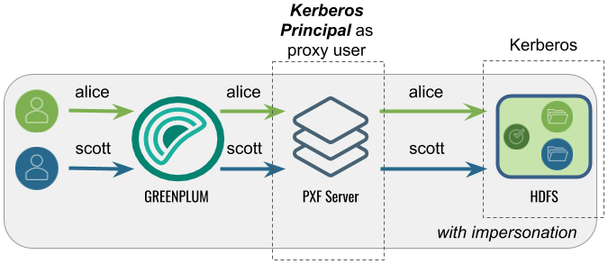
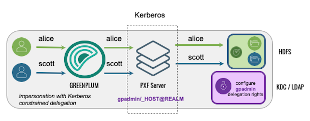
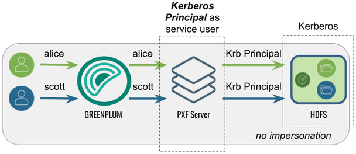
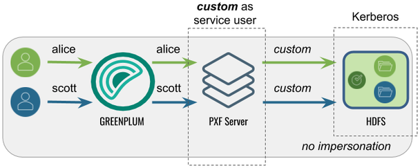

Configuring for Secure HDFS
When Kerberos is activated for your HDFS filesystem, the PXF Service, as an HDFS client, requires a principal and keytab file to authenticate access to HDFS. To read or write files on a secure HDFS, you must create and deploy Kerberos principals and keytabs for PXF, and ensure that Kerberos authentication is activated and functioning.
PXF accesses a secured Hadoop cluster on behalf of SynxDB end users. Impersonation is a way to present a SynxDB end user identity to a remote system. You can achieve this on a secured Hadoop cluster with PXF by configuring a Hadoop proxy user or using Kerberos constrained delegation.
The identity with which PXF accesses a Kerberos-secured Hadoop depends on the settings of the following properties:
| Property | Description | Default Value |
|---|---|---|
| pxf.service.kerberos.principal | The PXF Kerberos principal name. | gpadmin/_HOST@EXAMPLE.COM |
| pxf.service.user.impersonation | Activates/deactivates SynxDB user impersonation on the remote system. | true |
| pxf.service.kerberos.constrained-delegation | Activates/deactivates usage of Kerberos constrained delegation based on S4U Kerberos extensions. This option allows Hadoop administrators to avoid creating a proxy user configuration in Hadoop, instead requiring them to perform delegation configuration in an Active Directory (AD) or Identity Policy Audit (IPA) server. | false |
| pxf.service.kerberos.ticket-renew-window | The minimum elapsed lifespan (as a percentage) after which PXF attempts to renew/refresh a Kerberos ticket. Value range is from 0 (PXF generates a new ticket for all requests) to 1 (PXF renews after full ticket lifespan). | 0.8 (80%) |
| pxf.service.user.name | (Optional) The user name with which PXF connects to a remote Kerberos-secured cluster if user impersonation is deactivated and using the pxf.service.kerberos.principal is not desired. | None |
You configure these setting for a Hadoop PXF server via the pxf-site.xml configuration file. Refer to About the pxf-site.xml Configuration File for more information about the configuration properties in this file.
Note: PXF supports simultaneous access to multiple Kerberos-secured Hadoop clusters.
About Kerberos Constrained Delegation
Kerberos constrained delegation is a feature that allows an administrator to specify trust boundaries that restrict the scope of where an application can act on behalf of a user. You may choose to configure PXF to use Kerberos constrained delegation when you want to manage user impersonation privileges in a directory service without the need to specify a proxy Hadoop user. Refer to the Microsoft Service for User (S4U) Kerberos protocol extension documentation for more information about Kerberos constrained delegation.
When your AD or IPA server is configured appropriately and you activate Kerberos constrained delegation for PXF, the PXF service requests and obtains a Kerberos ticket on behalf of the user, and uses the ticket to access the HDFS file system. PXF caches the ticket for one day.
PXF supports Kerberos Constrained Delegation only when you use the hdfs:* or hive:* profiles to access data residing in a Kerberos-secured Hadoop cluster.
By default, Kerberos constrained delegation is deactivated for PXF. To activate Kerberos constrained delegation for a specific PXF server, you must set pxf.service.kerberos-constrained.delegation to true in the server’s pxf-site.xml configuration file.
Prerequisites
Before you configure PXF for access to a secure HDFS filesystem, ensure that you have:
-
Identified whether or not you plan to have PXF use Kerberos constrained delegation to access Hadoop.
-
Configured a PXF server for the Hadoop cluster, and can identify the server configuration name.
-
Configured and started PXF as described in Configuring PXF.
-
Verified that Kerberos is activated for your Hadoop cluster.
-
Verified that the HDFS configuration parameter
dfs.block.access.token.enableis set totrue. You can find this setting in thehdfs-site.xmlconfiguration file on a host in your Hadoop cluster. -
Noted the host name or IP address of each SynxDB host (<gphost>) and the Kerberos Key Distribution Center (KDC) <kdc-server> host.
-
Noted the name of the Kerberos <realm> in which your cluster resides.
-
Installed the Kerberos client packages on each SynxDB host if they are not already installed. You must have superuser permissions to install operating system packages. For example:
root@gphost$ rpm -qa | grep krb root@gphost$ yum install krb5-libs krb5-workstation
Ensure that you meet these additional prerequisites when PXF uses Kerberos constrained delegation:
-
S4U is activated in the AD or IPA server.
-
The AD or IPA server is configured to allow the PXF Kerberos principal to impersonate end users.
Use Cases and Configuration Scenarios
The following scenarios describe the use cases and configuration required when you use PXF to access a Kerberos-secured Hadoop cluster.
Note: These scenarios assume that gpadmin is the PXF process owner.
Accessing Hadoop as the SynxDB User
Proxied by the Kerberos Principal
In this configuration, PXF accesses Hadoop as the SynxDB user proxied by the Kerberos principal. The Kerberos principal is the Hadoop proxy user and accesses Hadoop as the SynxDB user.
This is the default configuration for a Hadoop PXF server.

The following table identifies the impersonation and service user settings, and the PXF and Hadoop configuration required for this use case:
| Impersonation | Service User | PXF Configuration | Hadoop Configuration |
|---|---|---|---|
| true | SynxDB user | Perform the Configuration Procedure in this topic. | Set the Kerberos principal as the Hadoop proxy user as described in Configure Hadoop Proxying. |
Using Kerberos Constrained Delegation
In this configuration, PXF uses Kerberos constrained delegation to request and obtain a ticket on behalf of the SynxDB user, and uses the ticket to access Hadoop.

The following table identifies the impersonation and service user settings, and the PXF and directory service configuration required for this use case; no Hadoop configuration is required:
| Impersonation | Service User | PXF Configuration | AD/IPA Config |
|---|---|---|---|
| true | SynxDB user | Set up the PXF Kerberos principal, keytab files, and related settings in pxf-site.xml as described in the Configuration Procedure in this topic, and Activate Kerberos Constrained Delegation. | Configure AD or IPA to provide the PXF Kerberos principal with the delegation rights for the SynxDB end users. |
Accessing Hadoop as the Kerberos Principal
In this configuration, PXF accesses Hadoop as the Kerberos principal. A query initiated by any SynxDB user appears on the Hadoop side as originating from the Kerberos principal.

The following table identifies the impersonation and service user settings, and the PXF and Hadoop configuration required for this use case:
| Impersonation | Service User | PXF Configuration | Hadoop Configuration |
|---|---|---|---|
| false | Identity of the Kerberos principal | Perform the configuration Procedure in this topic, and then turn off user impersonation as described in Configure PXF User Impersonation. | None required. |
Accessing Hadoop as a <custom> User
Proxied by the Kerberos Principal
In this configuration, PXF accesses Hadoop as a <custom> user (for example, hive).
The Kerberos principal is the Hadoop proxy user. A query initiated by any SynxDB
user appears on the Hadoop side as originating from the <custom> user.

The following table identifies the impersonation and service user settings, and the PXF and Hadoop configuration required for this use case:
| Impersonation | Service User | PXF Configuration | Hadoop Configuration |
|---|---|---|---|
| false | <custom> | Perform the Configuration Procedure in this topic, turn off user impersonation as described in Configure PXF User Impersonation, and Configure the Hadoop User to the <custom> user name. | Set the Kerberos principal as the Hadoop proxy user as described in Configure Hadoop Proxying. |
Note: PXF does not support accessing a Kerberos-secured Hadoop cluster with a <custom> user impersonating SynxDB users. PXF requires that you impersonate SynxDB users using the Kerberos principal.
Using Kerberos Constrained Delegation
In this configuration, PXF uses Kerberos constrained delegation to request and obtain a ticket on behalf of a <custom> user, and uses the ticket to access Hadoop.
The following table identifies the impersonation and service user settings, and the PXF and directory service configuration required for this use case; no Hadoop configuration is required:
| Impersonation | Service User | PXF Configuration | AD/IPA Config |
|---|---|---|---|
| false | <custom> | Set up the PXF Kerberos principal, keytab files, and related settings in pxf-site.xml as described in the Configuration Procedure in this topic, deactivate impersonation as described in Configure PXF User Impersonation, Activate Kerberos Constrained Delegation, and Configure the Hadoop User to the <custom> user name. | Configure AD or IPA to provide the PXF Kerberos principal with the delegation rights for the <custom> user name. |
Procedures
There are different procedures for configuring PXF for secure HDFS with a Microsoft Active Directory KDC Server vs. with an MIT Kerberos KDC Server.
Configuring PXF with a Microsoft Active Directory Kerberos KDC Server
When you configure PXF for secure HDFS using an AD Kerberos KDC server, you will perform tasks on both the KDC server host and the SynxDB coordinator host.
Perform the following steps to configure the Active Directory domain controller:
-
Start Active Directory Users and Computers.
-
Expand the forest domain and the top-level UNIX organizational unit that describes your SynxDB user domain.
-
Select Service Accounts, right-click, then select New->User.
-
Type a name, for example:
ServiceSynxDBPROD1, and change the login name togpadmin. Note that the login name should be in compliance with POSIX standard and matchhadoop.proxyuser.<name>.hosts/groupsin the Hadoopcore-site.xmland the Kerberos principal. -
Type and confirm the Active Directory service account password. Select the User cannot change password and Password never expires check boxes, then click Next. For security reasons, if you can’t have Password never expires checked, you will need to generate new keytab file (step 7) every time you change the password of the service account.
-
Click Finish to complete the creation of the new user principal.
-
Open Powershell or a command prompt and run the
ktpasscommand to generate the keytab file. For example:powershell#>ktpass -out pxf.service.keytab -princ gpadmin@EXAMPLE.COM -mapUser ServiceSynxDBPROD1 -pass ******* -crypto all -ptype KRB5_NT_PRINCIPALWith Active Directory, the principal and the keytab file are shared by all SynxDB hosts.
-
Copy the
pxf.service.keytabfile to the SynxDB coordinator host.
Perform the following procedure on the SynxDB coordinator host:
-
Log in to the SynxDB coordinator host. For example:
$ ssh gpadmin@<coordinator> -
Identify the name of the PXF Hadoop server configuration, and navigate to the server configuration directory. For example, if the server is named
hdp3:gpadmin@coordinator$ cd $PXF_BASE/servers/hdp3 -
If the server configuration does not yet include a
pxf-site.xmlfile, copy the template file to the directory. For example:gpadmin@coordinator$ cp <PXF_INSTALL_DIR>/templates/pxf-site.xml . -
Open the
pxf-site.xmlfile in the editor of your choice, and update the keytab and principal property settings, if required. Specify the location of the keytab file and the Kerberos principal, substituting your realm. For example:<property> <name>pxf.service.kerberos.principal</name> <value>gpadmin@EXAMPLE.COM</value> </property> <property> <name>pxf.service.kerberos.keytab</name> <value>${pxf.conf}/keytabs/pxf.service.keytab</value> </property> -
Save the file and exit the editor.
-
Synchronize the keytabs in
$PXF_BASE. You must distribute the keytab file to$PXF_BASE/keytabs/. Locate the keytab file and copy the file to the$PXF_BASEruntime configuration directory. The copy command that you specify differs based on the SynxDB version. For example:If your source SynxDB cluster is running version 5.x or 6.x:
gpadmin@coordinator$ gpscp -f hostfile_all pxf.service.keytab =:$PXF_BASE/keytabs/If your source SynxDB cluster is running version 7.x:
gpadmin@coordinator$ gpsync -f hostfile_all pxf.service.keytab =:$PXF_BASE/keytabs/ -
Set the required permissions on the keytab file. For example:
gpadmin@coordinator$ gpssh -f hostfile_all chmod 400 $PXF_BASE/keytabs/pxf.service.keytab -
Complete the PXF Configuration based on your chosen Hadoop access scenario.
Configuring PXF with an MIT Kerberos KDC Server
When you configure PXF for secure HDFS using an MIT Kerberos KDC server, you will perform tasks on both the KDC server host and the SynxDB coordinator host.
Perform the following steps on the MIT Kerberos KDC server host:
-
Log in to the Kerberos KDC server as the
rootuser.$ ssh root@<kdc-server> root@kdc-server$ -
Distribute the
/etc/krb5.confKerberos configuration file on the KDC server host to each host in your SynxDB cluster if not already present. For example:root@kdc-server$ scp /etc/krb5.conf <gphost>:/etc/krb5.conf -
Use the
kadmin.localcommand to create a Kerberos PXF Service principal for each SynxDB host. The service principal should be of the formgpadmin/<gphost>@<realm>where <gphost> is the DNS resolvable, fully-qualified hostname of the host system (output of thehostname -fcommand).For example, these commands create Kerberos PXF Service principals for the hosts named host1.example.com, host2.example.com, and host3.example.com in the Kerberos realm named
EXAMPLE.COM:root@kdc-server$ kadmin.local -q "addprinc -randkey -pw changeme gpadmin/host1.example.com@EXAMPLE.COM" root@kdc-server$ kadmin.local -q "addprinc -randkey -pw changeme gpadmin/host2.example.com@EXAMPLE.COM" root@kdc-server$ kadmin.local -q "addprinc -randkey -pw changeme gpadmin/host3.example.com@EXAMPLE.COM" -
Generate a keytab file for each PXF Service principal that you created in the previous step. Save the keytab files in any convenient location (this example uses the directory
/etc/security/keytabs). You will deploy the keytab files to their respective SynxDB host machines in a later step. For example:root@kdc-server$ kadmin.local -q "xst -norandkey -k /etc/security/keytabs/pxf-host1.service.keytab gpadmin/host1.example.com@EXAMPLE.COM" root@kdc-server$ kadmin.local -q "xst -norandkey -k /etc/security/keytabs/pxf-host2.service.keytab gpadmin/host2.example.com@EXAMPLE.COM" root@kdc-server$ kadmin.local -q "xst -norandkey -k /etc/security/keytabs/pxf-host3.service.keytab gpadmin/host3.example.com@EXAMPLE.COM"Repeat the
xstcommand as necessary to generate a keytab for each PXF Service principal that you created in the previous step. -
List the principals. For example:
root@kdc-server$ kadmin.local -q "listprincs" -
Copy the keytab file for each PXF Service principal to its respective host. For example, the following commands copy each principal generated in step 4 to the PXF default keytab directory on the host when
PXF_BASE=/usr/local/pxf-gp6:root@kdc-server$ scp /etc/security/keytabs/pxf-host1.service.keytab host1.example.com:/usr/local/pxf-gp6/keytabs/pxf.service.keytab root@kdc-server$ scp /etc/security/keytabs/pxf-host2.service.keytab host2.example.com:/usr/local/pxf-gp6/keytabs/pxf.service.keytab root@kdc-server$ scp /etc/security/keytabs/pxf-host3.service.keytab host3.example.com:/usr/local/pxf-gp6/keytabs/pxf.service.keytabNote the file system location of the keytab file on each PXF host; you will need this information for a later configuration step.
-
Change the ownership and permissions on the
pxf.service.keytabfiles. The files must be owned and readable by only thegpadminuser. For example:root@kdc-server$ ssh host1.example.com chown gpadmin:gpadmin /usr/local/pxf-gp6/keytabs/pxf.service.keytab root@kdc-server$ ssh host1.example.com chmod 400 /usr/local/pxf-gp6/keytabs/pxf.service.keytab root@kdc-server$ ssh host2.example.com chown gpadmin:gpadmin /usr/local/pxf-gp6/keytabs/pxf.service.keytab root@kdc-server$ ssh host2.example.com chmod 400 /usr/local/pxf-gp6/keytabs/pxf.service.keytab root@kdc-server$ ssh host3.example.com chown gpadmin:gpadmin /usr/local/pxf-gp6/keytabs/pxf.service.keytab root@kdc-server$ ssh host3.example.com chmod 400 /usr/local/pxf-gp6/keytabs/pxf.service.keytab
Perform the following steps on the SynxDB coordinator host:
-
Log in to the coordinator host. For example:
$ ssh gpadmin@<coordinator> -
Identify the name of the PXF Hadoop server configuration that requires Kerberos access.
-
Navigate to the server configuration directory. For example, if the server is named
hdp3:gpadmin@coordinator$ cd $PXF_BASE/servers/hdp3 -
If the server configuration does not yet include a
pxf-site.xmlfile, copy the template file to the directory. For example:gpadmin@coordinator$ cp <PXF_INSTALL_DIR>/templates/pxf-site.xml . -
Open the
pxf-site.xmlfile in the editor of your choice, and update the keytab and principal property settings, if required. Specify the location of the keytab file and the Kerberos principal, substituting your realm. The default values for these settings are identified below:<property> <name>pxf.service.kerberos.principal</name> <value>gpadmin/_HOST@EXAMPLE.COM</value> </property> <property> <name>pxf.service.kerberos.keytab</name> <value>${pxf.conf}/keytabs/pxf.service.keytab</value> </property>PXF automatically replaces
_HOSTwith the FQDN of the host. -
Complete the PXF Configuration based on your chosen Hadoop access scenario.
Completing the PXF Configuration
On the SynxDB coordinator host, complete the configuration of the PXF server based on your chosen Hadoop access scenario. Choose one, as these are mutually exclusive:
-
If you want to access Hadoop as the SynxDB user:
- Activate user impersonation as described in Configure PXF User Impersonation (this is the default setting).
- If you want to use Kerberos constrained delegation, activate it for the server, and configure AD or IPA to provide the PXF Kerberos principal with the delegation rights for the SynxDB end users.
- If you did not activate Kerberos constrained delegation, configure Hadoop proxying for the primary component of the Kerberos principal as described in Configure Hadoop Proxying. For example, if your principal is
gpadmin/_HOST@EXAMPLE.COM, configure proxying for the Hadoop usergpadmin.
-
If you want to access Hadoop using the identity of the Kerberos principal, deactivate user impersonation as described in Configure PXF User Impersonation.
-
If you want to access Hadoop as a custom user:
- Deactivate user impersonation as described in Configure PXF User Impersonation.
- Configure the custom user name as described in Configure the Hadoop User.
- If you want to use Kerberos constrained delegation, activate it for the server, and configure AD or IPA to provide the PXF Kerberos principal with the delegation rights for the custom user.
- If you did not activate Kerberos constrained delegation, configure Hadoop proxying for the primary component of the Kerberos principal as described in Configure Hadoop Proxying. For example, if your principal is
gpadmin/_HOST@EXAMPLE.COM, configure proxying for the Hadoop usergpadmin.
-
Synchronize the PXF configuration to your SynxDB cluster:
gpadmin@coordinator$ pxf cluster sync
Activating Kerberos Constrained Delegation
By default, Kerberos constrained delegation is deactivated for PXF. Perform the following procedure to configure Kerberos constrained delegation for a PXF server:
-
Log in to your SynxDB coordinator host as the administrative user:
$ ssh gpadmin@<coordinator> -
Identify the name of the Hadoop PXF server configuration that you want to update.
-
Navigate to the server configuration directory. For example, if the server is named
hdp3:gpadmin@coordinator$ cd $PXF_BASE/servers/hdp3 -
If the server configuration does not yet include a
pxf-site.xmlfile, copy the template file to the directory. For example:gpadmin@coordinator$ cp <PXF_INSTALL_DIR>/templates/pxf-site.xml . -
Open the
pxf-site.xmlfile in the editor of your choice, locate thepxf.service.kerberos-constrained.delegationproperty, and set it as follows:<property> <name>pxf.service.kerberos-constrained.delegation</name> <value>true</value> </property> -
Save the
pxf-site.xmlfile and exit the editor. -
Use the
pxf cluster synccommand to synchronize the PXF Hadoop server configuration to your SynxDB cluster:gpadmin@coordinator$ pxf cluster sync